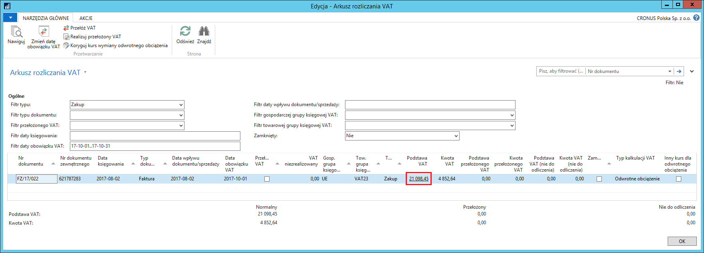
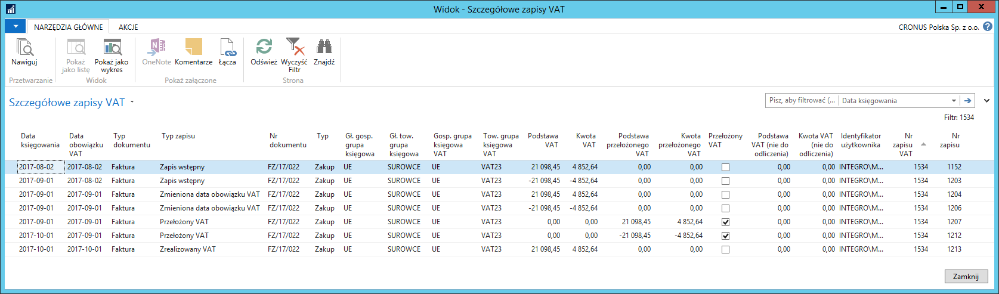
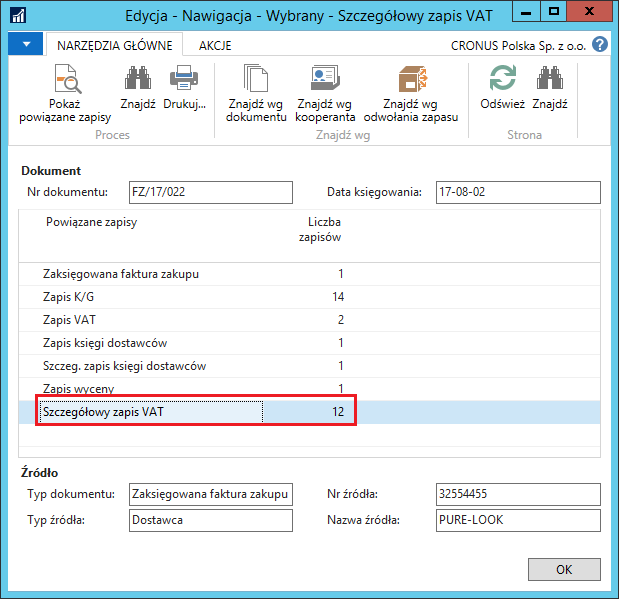

Szczegółowe zapisy VAT
Informacje ogólne
Funkcjonalność Szczegółowe zapisy VAT została dodana do systemu Microsoft Dynamics 365 Business Central on‑premises w celu dokładniejszej obsługi i większej kontroli nad zmianą wartości podatku VAT, który ma być rozliczony w danym okresie.
Zasada działania szczegółowych zapisów VAT jest podobna do zasady działania szczegółowych zapisów w innych księgach pomocniczych w systemie, takich jak szczegółowe zapisy księgi nabywców i szczegółowe zapisy księgi dostawców. Oznacza to, że w Szczegółowych zapisach VAT system przechowuje, w postaci oddzielnych zapisów, informacje o zmianach wartości Zapisów VAT. Kwoty w Zapisach VAT są sumą kwot zarejestrowanych w Szczegółowych zapisach VAT powiązanych z danym Zapisem VAT.
Obsługa
Użytkownik może dokonać przeglądu Szczegółowych zapisów VAT uzyskując do nich dostęp za pomocą dwóch najczęściej stosowanych metod:
Z okna Arkusz rozliczania VAT.
W tym celu należy postępować według następujących kroków:
Należy wybrać: Działy > Zarządzanie Finansami > Działania okresowe > VAT > Arkusz rozliczania VAT
W oknie Arkusz rozliczania VAT, które się otworzy, w wybranym wierszu należy kliknąć kwotę np. w polu Podstawa VAT:

W oknie Szczegółowe zapisy VAT przedstawiona jest historia zapisu VAT:

Kolumny w oknie Szczegółowe zapisy VAT są praktycznie takie same, jak w oknie Zapisy VAT, jednak 2 z nich są specyficzne dla okna Szczegółowe zapisy VAT:
Typ zapisu – to pole informuje o pochodzeniu szczegółowego zapisu VAT i może przyjmować następujące wartości:
Zapis wstępny – oznacza, że jest to początkowy (pierwszy) szczegółowy zapis VAT dla danego zapisu VAT lub odwrócenie tego zapisu
Przełożony VAT – oznacza, że ten szczegółowy zapis VAT zarejestrował fakt przełożenia VAT w danym zapisie VAT lub odwrócenie tego zapisu
Zrealizowany VAT – oznacza, że ten szczegółowy zapis VAT zarejestrował fakt realizacji przełożonego VAT w danym zapisie VAT lub odwrócenie tego zapisu
Zmieniona data obowiązku VAT – oznacza, że ten szczegółowy zapis VAT zarejestrował zmianę daty obowiązku VAT w danym zapisie VAT lub odwrócenie tego zapisu
Korekta odwrotnego obciążenia – oznacza, że ten szczegółowy zapis VAT zarejestrował kwotę podstawy i podatku VAT z tytułu odwrotnego obciążenia przeliczoną według innego kursu, niż zostało dokonane przeliczenie kwot zakupu i zobowiązania.
Nr zapisu VAT – to pole informuje o numerze zapisu VAT, z którym powiązany jest dany szczegółowy zapis VAT.
Z okna Arkusz rozliczania VAT.
W tym celu należy postępować według następujących kroków:
Należy wybrać Nawiguj w danym zapisie VAT lub jakimkolwiek zaksięgowanym dokumencie mającym powiązanie z zapisami VAT.
W oknie Nawigacja, które się otworzy, jest wiersz odwołujący się do okna Szczegółowe zapisy VAT:

- Należy zaznaczyć wiersz z tabelą Szczegółowy zapis VAT i wybrać Pokaż powiązane zapisy. Otworzy się okno Szczegółowe zapisy VAT, które zostało już wcześniej opisane.